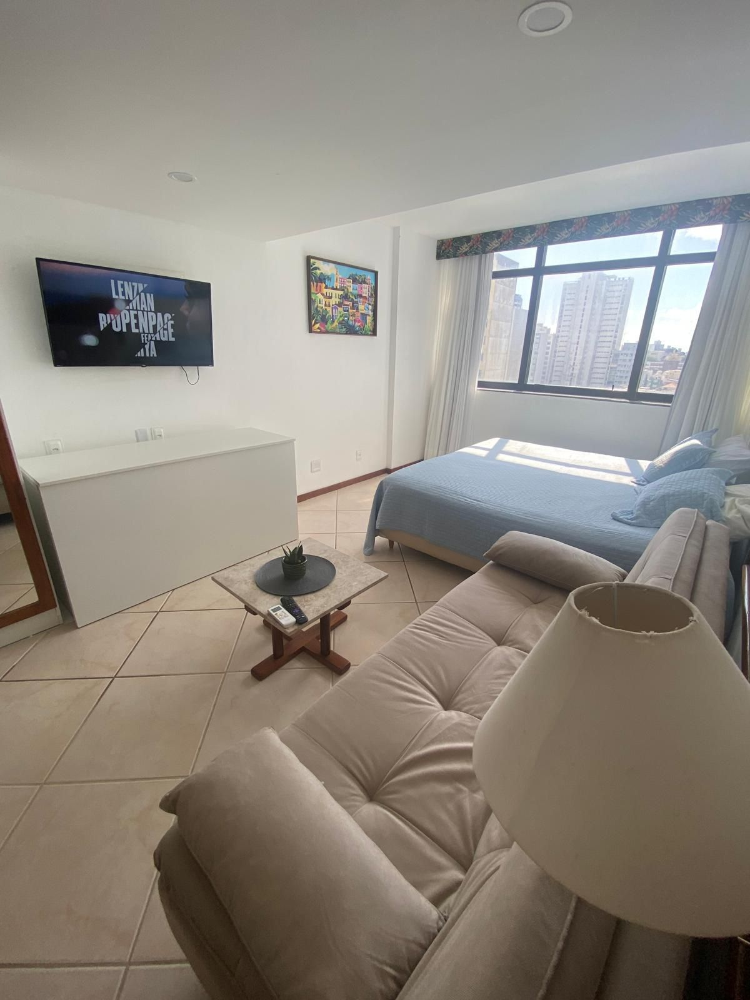
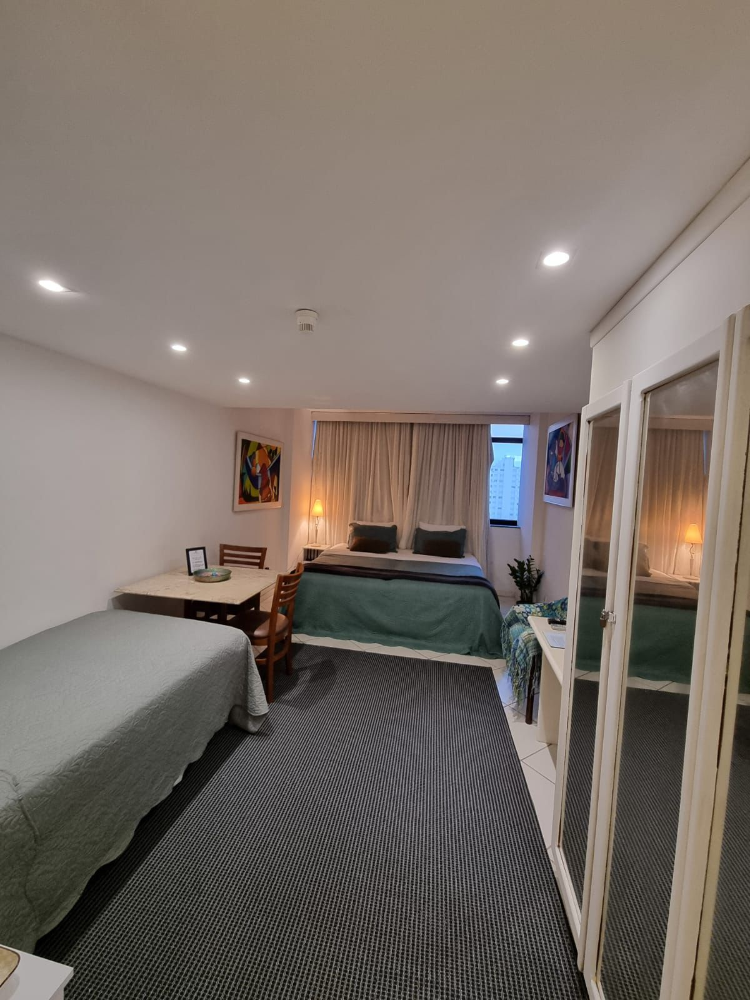

Vista mar
Vista mar
Quádruplo
até 5 hóspedes
Reserve agora →
Corredor da Vitória · Salvador, Bahia
A sua casa em Salvador por uns dias: vista para a baía, conforto de verdade e tudo pertinho, a poucos minutos da Barra e do Centro.
Bem-vindo
No coração do Corredor da Vitória, o Vitória Marina Flats reúne o que faz diferença numa viagem: vista para a baía, segurança, conforto e a cidade do seu lado. Cada flat é preparado com carinho para você se sentir em casa, seja a passeio ou a trabalho.
A localização
O Corredor da Vitória é um dos endereços mais nobres de Salvador: arborizado, seguro e debruçado sobre a Baía de Todos os Santos. Você fica pertinho do Farol da Barra, da Bahia Marina, de museus, restaurantes e shoppings.

"A vista que vende a viagem sozinha."
Av. Sete de Setembro, 2068 · Corredor da Vitória, Salvador-BA
Ver no Google Maps →
Píer Mahi Mahi · exclusivo
Tobogã, atracadouro, jet ski e um restaurante com os pés quase na água.

Descida de bondinho até o píer

Mahi Mahi Bar e Restaurante
Do alto do Corredor da Vitória, um bondinho leva você até o Píer Mahi Mahi, com tobogã, atracadouro e jet ski. Lá, o Mahi Mahi Bar e Restaurante serve com a baía bem na sua frente. Para muita gente, é o melhor píer de Salvador.
Tipos de quartos
Triplos e quádruplos, todos para até 5 hóspedes. Você escolhe entre vista mar e vista avenida.
Vista mar
até 5 hóspedes
Reserve agora →
Vista avenidaaté 5 hóspedes
Reserve agora → Vista mar
Vista mar
até 5 hóspedes
Reserve agora →
Vista avenidaaté 5 hóspedes
Reserve agora →Uma foto por tipo. As demais ficam na galeria.
No prédio e na unidade
Toalhas e lençóis inclusos · café da manhã não incluso.
Quem ficou, recomenda
"A vista é de tirar o fôlego e o apartamento estava impecável. A gente já quer voltar!"
"Perfect location, very safe, and the host replied in minutes."
"Ubicación inmejorable y una atención muy cercana. Todo perfecto."
Reserve com a gente
É só dizer as datas e quantas pessoas. Quando você enviar, a gente já abre o WhatsApp com tudo preenchido, sem precisar repetir nada. Se preferir, dá para reservar direto pelo Booking ou Airbnb.